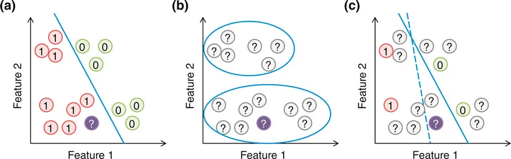
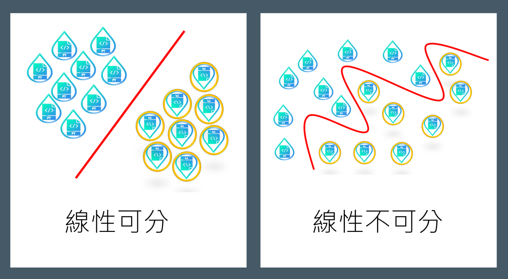
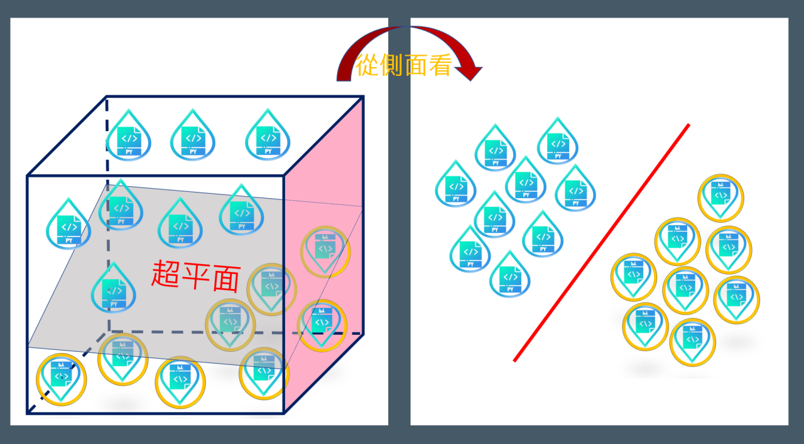
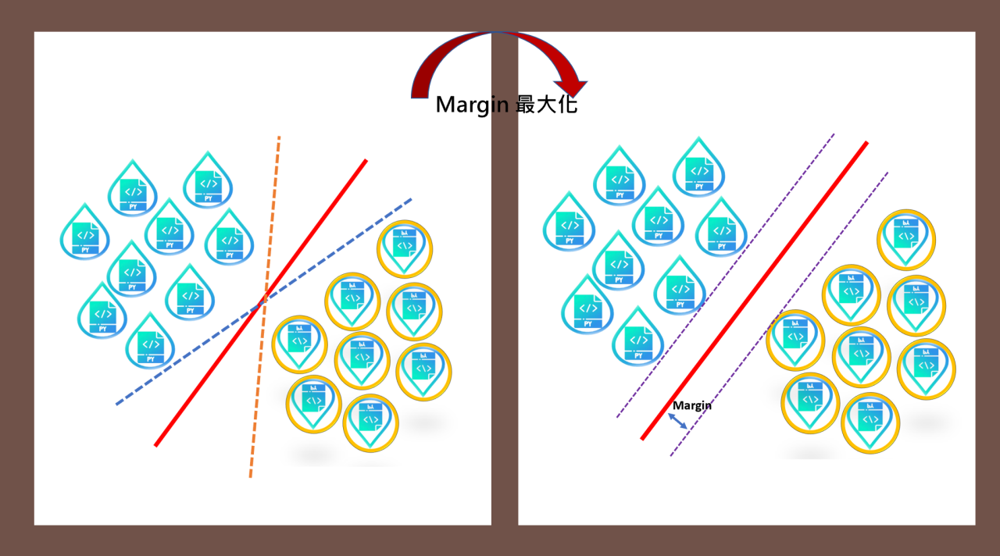
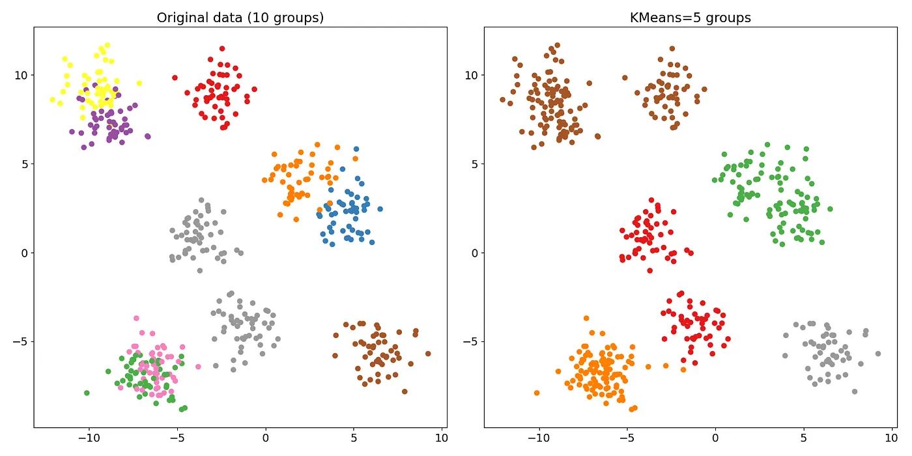

機器學習
Table of Contents

1. 機器學習
1.1. 簡介
- 機器學習是人工智慧的一個分支，在人工智慧的研究歷史有著一條從以「推理」為重點，到以「知識」為重點，再到以 「學習」為重點的自然、清晰的脈絡。
- 機器學習是實現人工智慧的一個途徑，即以機器學習為手段解決人工智慧中的問題。
- 機器學習理論主要是設計和分析一些讓電腦可以自動「學習」 的演算法。機器學習演算法是一類從資料中自動分析獲得規 律，並利用規律對未知資料進行預測的演算法。
- 機器學習已廣泛應用於資料探勘、電腦視覺、自然語言處理、
- 生物特徵辨識、搜尋引擎、醫學診斷、檢測信用卡欺詐、證券市場分析、DNA 序列測序、語音和手寫辨識、戰略遊戲和機器人等領域
- 機器學習是一門人工智慧的科學，該領域的主要研究物件是人工智慧，特別是如何=在經驗學習中=改善具體演算法的效能。
- 機器學習是對能通過經驗=自動改進=的電腦演算法研究
- 機器學習是用資料或以往的經驗，以此最佳化電 腦程式的效能標準。

2. 機器是如何學習的
2.1. 傳統程式設計
假設有一個用來描述直線的函數(模型): \(y=wx+b\)，直線上的每個點都可以用 \(x\) 值乘以\(w\)(權重值)再加上\(b\)(偏差值)，得到相應的 \(y\) 值。
現在假設直線上有兩個點，分別是 \(x=2, y=3\) 和 \(x=3, y=5\) (如圖2)，那麼，請問當 \(x=10\) 時，\(y\) 的值是多少呢？
1: import matplotlib.pyplot as plt 2: import numpy as np 3: 4: x = [2, 3] 5: y = [3, 5] 6: plt.plot(x, y, '-*') 7: plt.xlim(0, 5) 8: plt.ylim(0, 7) 9: plt.text(2.1, 3-0.1, '(2, 3)') 10: plt.text(3.1, 5-0.1, '(3, 5)') 11: plt.savefig('images/TrandPlot.png', dpi=300)

Figure 2: 一個直線函數問題
以下是傳統的程式設計模式，受了十數年高深數學教育的你，第一反應大概是會想先求出連接這兩個點的直線所相應的 \(w\) 值與 \(b\) 值(也就是模型中的兩個參數)。
- 解法1: class版
看不懂的可以看底下的tuple版
def get_slope(p1, p2): w = (p2.y - p1.y) / (p2.x - p1.x) return w def get_bias(p1, w): b = p1.y - (w*p1.x) return b def get_y(x, w, b): y = w*x + b from dataclasses import dataclass @dataclass class Point: x: float y: float p1 = Point(2, 3) p2 = Point(3, 5) w = get_slope(p1, p2) b = get_bias(p1, w) print("Slope:", w) print("Bias:", b) print(f'當x=10時，y={w}*10+{b}={w*10+b}')
Slope: 2.0 Bias: -1.0 當x=10時，y=2.0*10+-1.0=19.0
- 解法2: tuple版
def get_slope(p1, p2): p1x, p1y = p1 #取出tuple中的(x, y) p2x, p2y = p2 #取出tuple中的(x, y) w = (p2y - p1y) / (p2x - p1x) return w def get_bias(p1, w): p1x, p1y = p1 #取出tuple中的(x, y) b = p1y - (w*p1x) return b def get_y(x, w, b): y = w*x + b # 以tuple來描述(x, y) p1 = (2, 3) p2 = (3, 5) w = get_slope(p1, p2) b = get_bias(p1, w) print("Slope:", w) print("Bias:", b) print(f'當x=10時，y={w}*10+{b}={w*10+b}')
Slope: 2.0 Bias: -1.0 當x=10時，y=2.0*10+-1.0=19.0
- 傳統的程式設計模式
由以上的程式碼可以看出傳統的解題模式為：
- 給資料(兩個點)
- 給規則(公式)
接下來就以程式來解出答案，那麼，面臨一樣的問題，機器學習的解題策略又是如何呢？

- 給資料(兩個點)
2.2. 機器學習的策略
機器學習把這個線性函數當成一個模型，而我們想求的 \(w\) 和 \(b\) 則為模型的兩個參數，如果要以機器學習的方式來解題，其策略大致如下：
- 第一步：猜答案
一開始我們並不知道正確答案是什麼，所以用猜的：以隨機亂數來做為 \(w\) 和\(b\) 值，例如：\(y=10x+5\)。 - 第二步：評估猜測答案的品質
上個步驟中所猜的 \(w\) 和\(b\) 值夠不夠準確呢？我們可以用\(y=10x+5\) 這個函數來計算出每個 \(x\) 值相對應的 \(y\) 值，再和 正確 的 \(y\) 值比較，看看還差多少。這個比較的方式稱為「損失」(loss)或「誤差」(error)。 - 第三步：對所猜測的策略進行最佳化調整
依據上一步驟猜測結果的品質(loss或error)做出更好的猜測，這個步驟稱為「最佳化」(optimization)。微積分可以用「梯度遞減」(gradient descent)的方式來進行。
整個流程大致如下：

2.3. 實作1
pip3 install tensorflow
import tensorflow as tf import numpy as np from tensorflow.keras import Sequential from tensorflow.keras.layers import Dense l0 = Dense(units=1, input_shape=[1]) model = Sequential([l0]) model.compile(optimizer='sgd', loss='mean_squared_error') xs = np.array([2.0, 3.0], dtype=float) ys = np.array([3.0, 5.0], dtype=float) model.fit(xs, ys, epochs=500, verbose=0) print(f'y的預測結果為: {model.predict([10.0])}') print("模型的兩個參數w,b: {}".format(l0.get_weights()))
1/1 [==============================] - 0s 172ms/step y的預測結果為: 14.709847 模型的兩個參數w, b: [array([[1.4212971]], dtype=float32), array([0.49687672], dtype=float32)]
但是正確答案為19，預測的結果好像不太準….QQ
2.4. 實作2
如果我們向上帝偷偷多要一個模型的參照點(4, 7)，以三點當成標準答案來進行預測，結果會不會好一點呢?
import tensorflow as tf import numpy as np from tensorflow.keras import Sequential from tensorflow.keras.layers import Dense l0 = Dense(units=1, input_shape=[1]) model = Sequential([l0]) model.compile(optimizer='sgd', loss='mean_squared_error') xs = np.array([2.0, 3.0, 4.0], dtype=float) ys = np.array([3.0, 5.0, 7.0], dtype=float) model.fit(xs, ys, epochs=500, verbose=0) print(f'y的預測結果為: {model.predict([10.0])}') print("模型的兩個參數w,b: {}".format(l0.get_weights()))
y的預測結果為: [[17.07221]] 模型的兩個參數w,b: [array([[1.7164488]], dtype=float32), array([-0.09227743], dtype=float32)]
預測結果y的值為17.072221，而正確答案為19，好像也不怎麼樣….-_-
兩個參數的值為(1.7164488, -0.9227743)，與正確答案(2, -1)相近。
2.5. 實作3
讓我們壯起膽子再跟上帝多要兩個線上的點:(-1, -3)、(0, -1)，以五點當成標準答案來進行預測，其實作的程式碼為：
1: import tensorflow as tf 2: import numpy as np 3: from tensorflow.keras import Sequential 4: from tensorflow.keras.layers import Dense 5: 6: l0 = Dense(units=1, input_shape=[1]) 7: model = Sequential([l0]) 8: model.compile(optimizer='sgd', loss='mean_squared_error') 9: 10: xs = np.array([-1.0, 0.0, 1.0, 2.0, 3.0, 4.0], dtype=float) 11: ys = np.array([-3.0, -1.0, 1.0, 3.0, 5.0, 7.0], dtype=float) 12: 13: model.fit(xs, ys, epochs=500, verbose=0) 14: 15: print(f'y的預測結果為: {model.predict([10.0])}') 16: print("模型的兩個參數w,b: {}".format(l0.get_weights()))
y的預測結果為:[[18.979391]] 模型的兩個參數w,b: [array([[1.9970131]], dtype=float32), array([-0.99074], dtype=float32)]
模型對 \(y\) 的預測結果為18.979391，與正確答案19已經十分相近。
3. 機器學習的類型

Figure 3: 機器學習的類型

Figure 4: 監督、非監督、半監督
3.1. 監督式學習(Supervised learning)

Figure 5: 監督式學習流程圖
- 監督式學習指在訓練過程中直接告訴機器答案，也就是將資料進行標註(label:人力標註)，例如，在 1000 張訓練集照片中標註「貓/狗」。目前九成以上的機器學習應用均屬此類。
- 監督學習的訓練集要求是包括輸入和輸出， 也可以說是特徵和目標。做法是從給定的訓練資料集中學習出一個函式，當新的資料到來時，可以根據這個函式預測結果。
- 為迄今為止最常見的機器學習，泛指一群的機器學習演算法，是從一組「已標記」的「訓練數據集」(training dataset)來學習(訓練)，並導出模型。然後，以此一模型對「未標記」的類似數據進行預測分類，其運作流程如圖51所示。典型的例子為早期電子郵件的垃圾信件是讓使用者先去標記某些信為垃圾郵件，然後藉由這些被標記的郵件來推論找出其他可能的垃圾郵件；由此看來，我們以為 Gmail 很好心的提供給我們為信件加註「垃圾」、「廣告」的功能，其實是 Google 利用我們當免費勞工為他們提供信件加註標籤的工作。
- 方法
- 分類: 最短距離分類器、KNN分類器、決策樹
- 類神經網路
- 單純貝氏分類器(Naive Bayes Classifier)
- 邏輯迴歸(Logisitc Regression)
- 決策樹(Decision tree)
- 支援向量機(SVM, Support Vector Machine)
- 分類: 最短距離分類器、KNN分類器、決策樹
- 典型應用
- Credit/loan approval:信用評比與貸款通過
- Medical diagnosis: if a tumor is cancerous or benign(是否有 XX 癌症)
- Fraud detection: if a transaction is fraudulent 詐騙或正常交易
- 垃圾郵件(SPAM)或正常郵件
- Web page categorization 網站分類: which category it is
- 資安應用: 取得有漏洞程式碼資料集(label)，評估其他程式是否有漏洞
- Credit/loan approval:信用評比與貸款通過
- 類型：
- 決策樹

Figure 8: Decision Tree
圖8為「鳶尾花數據集」(http://archive.ics.uci.deu/ml/datasets/Iris)的分類結果，依鳶尾花的四個特徵：花萼(sepal)長度、寬度、花瓣(petal)長度、寬度，對其進行鳶尾花種類判斷。
- 支援向量機(Support Vector Machine, SVM)

Figure 9: SVM
支援向量機是一種基於統計學習理論基礎的機器學習模型，針對小樣本、非線性、高維度與局部最小點等問題具有相對的優勢，主要用來處理分類問題。除了在文字分類、圖像分類及醫學中分類蛋白質等領域有不錯的成效外，因具有計算速度快且空間成本低等優勢，在工業界也有廣泛的應用2。

Figure 10: SVM超平面

Figure 11: 將超平面最大化
SVM不僅能將數據分門別類，甚至還可以找到最大化的「分離超平面」（類似於三維以上空間中的一個平面）2，會最大化每個樣本點與該「超平面」的差。此外，當數據是「不可線性分離」時，支援向量機還可以透過「軟邊界」(soft margin)和「核技巧」(kernel trick)來處理。


3.2. 非監督式學習(Unsupervised learning)

Figure 12: 資料分群
- 非監督式學習只有觀測值，單純給電腦大量觀測資料，然後從這些資料找出潛在規則。例如：將 10 萬張照片依據電腦自己歸納的規則分為數個不同的群組(如圖12左3)或是分成5群(如圖12右)。
- 在監督式學習中，我們事先會知道訓練集數據的正確答案(label)，並依此訓練我們的模型；在強化學習的環境中，我們會為代理人定義如何度量特定行動的奬勵；然而，在「非監督式學習」的環境中，我們面對的是未標記類別的數據或未知結構的數據，目的是讓演算法導出結論。最典型的例子就是「集群」(clustering)，即，讓演算法自己根據數據的特性把它們依某種特質分類為不同子集合，這裡的子集合不一定要是有限集合，也可能是無界子集(unbounded subsets)。「受限玻爾茲曼機」以及「深度信念網路」(deep belief networks, DBN)都屬此類。
- 非監督式學習經常被運用於資料分析的前置階段，用來先將資料分群或降低維度(減少變數量)，以利後續的分析或監督式學習的進行。
- 方法：
- 群集(Clustering): K平均法(K-means)、階層式分群
cluster analysis 是一種精簡資料的方法，主要目的是將一大筆資料依據樣本之間的共同屬性精簡成少數幾個同質性次群體 homogeneous subgroups ，即以相似性 similarity 衡量，形成集群(cluster)，以便從雜亂無章的一大堆原始資料中，做到分類、分群的目標。而所謂的相似性通常是以「距離」作為衡量，相對距離愈近，相似程度愈高，分群之後可以使得群內差異小、群間差異大4。 - 階層式分群(Hierarchical Clustering)
將資料在一個階層式的樹狀上，反覆的利用拆分以及聚合的方式建立出一個分類系統。階層式分群的優勢在於它使用上的簡單性以及能夠在小數據上操作，然而卻非常難處理大型的資料5。
各群組間的距離計算方式有以下三種：Single linkage、Maximum linkage、Average Linkage - 自動編碼器(Autoencoder)
由編碼器(encoder)與解碼器(decoder)構成，
- 群集(Clustering): K平均法(K-means)、階層式分群
- 範例：
- 集群(cluster): 是一種「探索式數據分析」(exploratory data analysis)技術，它允許我們先組織一堆資訊到一個有意義的「子集群」(clusters)中，而無需任何先驗知識。
- K-means: 將數據集中的每個樣本分類到 k 個不同的子集合中，它隨機選擇 k 個點，這些點稱為「質心」(centroid)，代表這 k 個不同子集合的中心點，然後對於每個「質心」，我們選擇最接近它的一點，群組起來。
- 集群(cluster): 是一種「探索式數據分析」(exploratory data analysis)技術，它允許我們先組織一堆資訊到一個有意義的「子集群」(clusters)中，而無需任何先驗知識。
3.3. 半監督式學習

3.4. 增強式學習
- 機器為了達成目標，隨著環境的變動，而逐步調整其行為，並評估每一個行動之後所到 的回饋是正向的或負向的，即，在 try-and-error 的過程中一步步從失敗中找出成功的路徑。
- 較常用於以下領域：電腦遊戲、下棋、自駕車、機器人。
- AlphaGo：先以監督式學習(以人類棋譜來訓練)訓練出早期版的 AlphaGo，接下來以增強式學習兩個最期版的 AlphaGo 對奕(40 天內對奕 3000 萬盤棋)。
- 2017 年的 AlphaZero 則放棄監督式學習(人類棋譜)，完全採取強化學習的模式，三天後摸索出自己的圍棋下法，成為有史以來棋力最強的版本。(不再以人類為師，所以才能超越人類？)
- Google 也將強化學習用於機房伺服器管理，持續偵測機房室內外用電、溫度、建立模型，由模型決定每台伺服器的運轉(全速、低速、休眠、關機)，並達到省電 40%的目標。
- 強化學習的目標在於開發一個系統（或代理人，agent）,他會藉由與環境的互動來改進自身的效能。由於當前的環境狀態資訊通常就包含了所謂「奬勵信號」(reward signal)，強化學習的目的就是找到一個最好的 Policy(策略)，可以讓 reward 最多。所以也可以把「強化學習」視為與「監督式學習」相關聯的領域，然而在強化學習中，環境回饋不能視為真實正的事實（或是說，正確的標籤），只能將之視為：測量函數對特定行動所觀測到並回報的一個度量值。如圖15，Agent
- 最常見的應用是教機器如何「玩遊戲」，在這種情境下，我們不會對某個動作貼標籤說它是「好」或「壞」，而是根據遊戲的結果（輸或是贏）或是遊戲中的信號（得分或失分）來做為回饋。

Figure 14: 強化學習流程圖

3.5. 依據AI模型是否能由即時資料流進行增量學習來區分7
- Offline (Batch) learning:
In batch learning, the system is incapable of learning incrementally; it must be trained using all the available data.
- Online learning:
- In online learning, you train the system incrementally by feeding it data instances sequentially, either individually or in small groups called mini-batches.
- Online learning is great for systems that receive data as a continuous flow (e.g., stock prices) and need to adapt to change rapidly or autonomously.
- Online learning algorithms can also be used to train systems on huge datasets that cannot fit in one machine’s main memory (this is called out-of-core learning).
- In online learning, you train the system incrementally by feeding it data instances sequentially, either individually or in small groups called mini-batches.
4. 機器學習的程序與資料呈現方式
4.1. 機器學習如何解決問題
- 數據收集(Data Collection): 在監督式學習下還要蒐集正確的標記
- 數據處理(Data Processing): 包含「數據清理」，例如：刪除「冗餘」或「高度相關的特徵」，或補滿「遺漏值」。
- 建立測試案例(Creation of the test case): 通常包括：「訓練數據集」(training dataset)用來訓練演算法、「測試數據集」(test dataset)用來測試訓練完成的演算法、以及「驗證數據集」(validation dataset)用來進行最終測試(在不斷的訓練-測試之後)。
- 建立模型
- 訓練模型
- 評估、 修正模型
4.2. 機器學習的資料呈現方式
How can we represent data (images, text, user preferences, etc.) in a way that computers can understand? -> Organize information into a vector8.
- A vector is a 1-dimensional array of numbers. It has both a magnitude(length) and a direction.
A feature vector is a vector whose entries represent the “features” of some object.

Figure 16: Feature Vector
4.3. Images
In black and white images, black and white pixels correspond to 0s and 1s. Grayscale pixels are numbers between 0 and 255. Both assemble into a 1-dimensional array of numbers.

Figure 17: Image data representations
4.4. Words and Documents
Given a collection of documents (e.g. Wikipedia articles), assign to every word a vector whose \(i^{th}\) entry is the number of times the word appears in the \(i^{th}\) document.

Figure 18: Words and documents representations
These vectors can assemble into a large matrix, useful for latent semantic analysis.
4.5. Yes/No or Ratings
Given users and items (e.g. movies), vectors can indicate if a user has interacted with the item (1=yes, 0=no) or the user’s ratings, say a number between 0 and 5.

Figure 19: Y/N or Ratings
4.6. One-Hot Encodings
Assign to each word a vector with one 1 and 0s elsewhere. This is called a one-hot encoding (or a “standard basis vector”). For example, suppose our language only has four words:

Figure 20: words one-hot encoding
5. 機器學習的主要挑戰7
5.1. Insufficient quantity of training data
Even for very simple problems you typically need thousands of examples, and for complex problems such as image or speech recognition you may need millions of examples. The idea that data matters more than algorithms for complex problems was further popularized by Peter norvig et al. in a paper titled “The Unreasonable Effectiveness of Data”, published in 2009.
5.2. Nonrepresentative training data
- In order to generalize well, it is crucial that your training data be representative of the new cases you want to generalize to.
- Perhaps the most famous example of sampling bias happened during the US presidential election in 1936, which pitted Landon against Roosevelt: the Literary Digest conducted a very large poll, sending mail to about 10 million people. The flaw was in the Literary Digest’s sampling method:
- First, to obtain the addresses to send the polls to, the Literary Digest use telephone directories, lists of magazine subscribers, club membership lists, and the like.
- Second, less than 25% of the people who were polled answered.
- First, to obtain the addresses to send the polls to, the Literary Digest use telephone directories, lists of magazine subscribers, club membership lists, and the like.

Figure 21: 加入更多資料會使 modle 更具代表性
5.3. Poor-quality data
Obviously, if your training data is full of errors, outliers, and noise (e.g., due to poor-quality measurements), it will make it harder for the system to detect the underlying patterns, so your system is less likely to perform well.
5.4. Irrelevant features
As the saying goes: garbage in, garbage out. Your system will only be capable of learning if the training data contains enough relevant features and not too many irrelevant ones.
5.5. Overfitting the training data
- Overfitting happens when the model is too complex relative to the amount and noisiness of the training data. Here are possible solutions:
- Simplify the model by selecting one with fewer parameters.
- Gather more training data.
- Reduce the noise in the training data (e.g., fix data errors and remove outliers).
- Simplify the model by selecting one with fewer parameters.
- Constraining a model to make it simpler and reduce the risk of overfitting is called regularization.
- The amount of regularization to apply during learning can be controlled by a hyperparameter. A hyperparameter is a parameter of a learning algorithm (not of the model).
5.6. Underfitting the training data
Underfitting occurs when your model is too simple to learn the underlying structure of the data.
6. 典型的機器學習MODEL Training[實作]
以“rock, paper, and scissors”辨識為例8:
- 將三種圖案的image讀入model中
- 於model中建立神經元(可視為function)，學習不同image的特徵
- 根據上述神經元讀取的特徵值(features)，配合該image之答案(label)，進行學習
1: model = tf.keras.models.Sequence([ 2: tf.keras.layers.Flatten(input_shape=(150, 150, 3)), 3: tf.keras.layers.Dense(512, activation='relu'), 4: tf.keras.layers.Dense(3, activatio='softmax') 5: ]) 6: 7: model.compile(loss='categorical_crossentropy', optimizer='rmsprop') 8: 9: model.fit(...., epochs=100)
6.1. Process of learning
可先將512個神經元視為512個function，每個function裡有許多變數，這些變數的初始值為random assign，接下來每個function陸續讀取image的所有feature(即圖的每個pixel，這裡可以將之視為傳入該function的parameters)，然後根據function中的變數值，開始學習要如何調整function裡的變數值才能輸出這個image的正確答案(label)，每個神經元同時進行學習與變數值調校。


6.2. Example of training
輸入image為rock

Figure 24: Stone
輸入image為paper

Figure 25: Paper
6.3. Model v.s. Layer: Training step by step
Input layer
此的輸入為image，對model來說，其feature為150*150*3

Figure 26: input_shape
Hidden layer
中間層(hidden layer)有512個神經元，可視為512個function

Figure 27: hidden_layer
Output layer
輸出層(output layer)則輸出三種可能的答案

Figure 28: output_layer
6.4. compile v.s. fit
- compile: Compile與傳統程式設計概念不同，此處旨在訂定兩個model training中最重要的關鍵: loss function與optimizer。剛才提及每個function(或neuron)都對於產生答案(label)做出了貢獻，然而這個答案到底好或不好，必須要有一個評估機制，loss function的目的就在評估每一次所有neuron所產生的答案是否足夠好(以此例來看至少正確率必須高過1/3)，然後把評估結果丟給optimizer，由它來決定下一次猜測時neuron裡的parameters要如何調整。
- fit: 如此重複不斷的進行“輸入feature->猜測答案->評估答案->修正parameter->輸入features->猜測答案->評估答案->修正parameter….”，希望最終能找到各neuron中最佳的parameters值，每一次的訓練稱為一次epoch。這就是fit在做的事，也是實際訓練的動作，訓練所需時間視輸入值、model複雜程度與硬體效能而定，也許僅需數分鐘，也許要耗時數週。

Figure 29: compile-phase